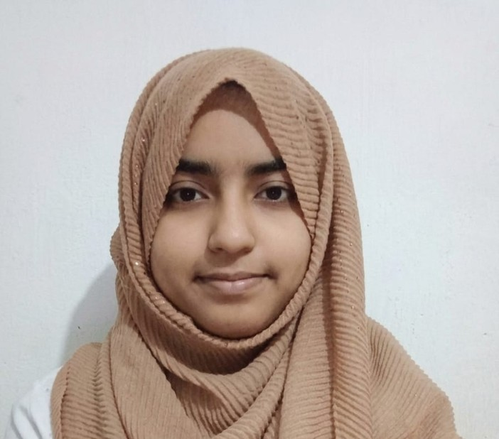

Israt Tamanna Niharika
Genetic engineering and biotechnology graduate, now an MS student at the University of Rajshahi. I work across the wet lab and the computer: from plasmid constructs and HPLC to protein structure prediction and docking.
About
I completed my B.Sc. in Genetic Engineering and Biotechnology at the University of Rajshahi (CGPA 3.66/4.00) in April 2026 and began my MS in the same field in August 2026.
My lab experience covers DNA and plasmid work, bacterial culture and transformation, and chromatographic assays. On the computational side I design proteins, run molecular docking and study how SNPs change protein structure and function. My final year project combined both: an in silico study of a PET-degrading hydrolase, plus the vector construction to express it in E. coli.
Education
- Aug 2026 – 2027
MS, Genetic Engineering and Biotechnology
University of Rajshahi. In progress.
- Dec 2021 – Apr 2026
B.Sc., Genetic Engineering and Biotechnology
University of Rajshahi. CGPA 3.66/4.00.
- 2020
Higher Secondary Certificate
Cox’s Bazar Government College. GPA 5.00/5.00.
- 2017
Secondary School Certificate
Cox’s Bazar Govt. Girls’ High School. GPA 5.00/5.00.
Research and projects
- Research intern
Molecular Biology and Protein Science Laboratory
- DNA extraction, gel electrophoresis and identification of illicit drugs (Yaba, heroin, methamphetamine and others).
- Bacterial cell culture, competent cell preparation, transcription and HPLC assays.
- B.Sc. final year project
PET-degrading α/β hydrolase from Comamonas testosteroni
- In silico characterization of the enzyme and recombinant vector construction for heterologous expression in E. coli BL21(DE3).
- Computational biology
PTEN SNPs in autism spectrum disorder
- Structural and functional impact of non-synonymous PTEN SNPs, using protein design, molecular docking and SNP distribution and clinical significance analysis with NCBI resources.
Publications
- Biswas, S., Ahmed, M., Das, P., Niharika, I. T., Das, S. C., Shayla, Mst. U., Mita, M. A., Biswas, S., Hasan, Md. R., Zaman, S., & Saleh, Md. A. (2025). Biofilms: Mechanisms, quorum sensing, antibiotic resistance, and implications in the food industry. Biologia, 80(7), 1803–1821. doi.org/10.1007/s11756-025-01953-0
- Chowdhury, M. A., Billah, M. M., Mostafa, S., Noor, S., Niharika, I. T., & Rahman, M. H. Structural and functional impact of PTEN non-synonymous SNPs in autism spectrum disorder: A computational approach. In preparation
Skills
- Wet lab
- Sample preparation, bacterial culture and identification, DNA and plasmid extraction, gel electrophoresis, PCR, Sanger sequencing, restriction digestion and ligation, competent cells and transformation, SDS-PAGE, HPLC, UV-Vis spectroscopy, colorimetric tests, aseptic technique.
- Computational
- PCR primer design, codon optimization, protein structure prediction (AlphaFold 3, homology modeling), molecular docking, drug design, data analysis with Excel, Python and GraphPad Prism.
- Regulatory
- Good Laboratory Practices (GLP), familiarity with GMP workflows, data integrity and compliance documentation.
Courses, conferences and workshops
- Fall 2024
ScienSpur: Cell Biology
Lakshmi Mittal & Family South Asian Institute, Harvard University.
- Fall 2023
ScienSpur: Molecular Genetics
Lakshmi Mittal & Family South Asian Institute, Harvard University.
- Apr 2024
International Scientific Conference 2024
“Advances and Challenges through Translational Research in Biological Sciences”, University of Rajshahi.
- Apr 2024
GEB journal club: “The COVID Experience of an ID Physician from India”
University of Rajshahi.
- Mar 2024
GEB journal club: “How Computers are Revolutionizing Biology”
University of Rajshahi.
- Workshop
Research Methodology and Computer-Aided Drug Design
3-day hands-on training with the ABCD Laboratory.
Volunteering
- 2021 – 2023
Bangladesh Biology Olympiad
Helped organize academic events, coordinated participants and supported science outreach for students.
- Ongoing
Nabojagoron Foundation
Mentored and organized learning sessions for underprivileged children.
- Ongoing
Blood donor
Regular participant in voluntary blood donation programs.
Contact
For research collaboration, lab opportunities or questions about my work, write to israt.t.niharika@gmail.com.